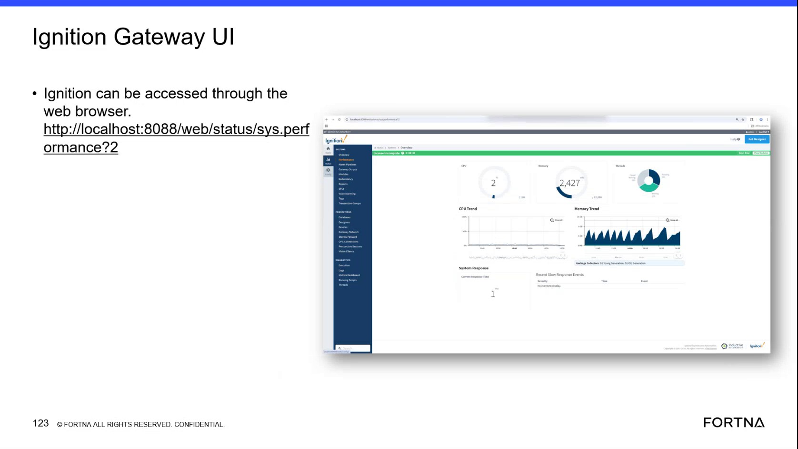

| Procedure ID | proc_check_ignition_gateway_sys_perf_v1 |
|---|---|
| Title | Check Ignition Gateway system performance status via Ignition Gateway UI (sys.perf) |
| Procedure Type | diagnostic |
| Primary Role | L1_support |
| Support Safe | Yes |
| Capability Tags | gateway_health |
| Access Surface | ignition_gateway |
| Audience Roles | L1_support |
| Failure Pattern Tags | gateway_unhealthy |
| Validation Status | needs_sme_review |
| Merge Status | source_finalized |
Use the Ignition Gateway web UI to open the system performance status page (/web/status/sys.perf) and confirm the page is reachable and loads successfully so support can assess Ignition Gateway health/performance.
When you need to verify whether the Ignition Gateway is reachable and whether its system performance status page loads successfully (sys.perf), to support gateway health/performance assessment.

Responsible role: L1_support
Instruction:
On the Ignition host, open a web browser and navigate to http://localhost:8088/web/status/sys.perf.
Expected result:
The browser navigates to the /web/status/sys.perf page (no browser error preventing page load).
Stop or Escalate If:
Responsible role: L1_support
Instruction:
After the page loads, confirm the content corresponds to a system performance/status view for sys.perf.
Expected result:
The sys.perf page loads successfully and displays a system performance/status view.
Stop or Escalate If:
Responsible role: L1_support
Instruction:
If the sys.perf page does not load, note the exact browser failure symptom (for example, connection refused/unreachable) and stop; escalate for Ignition Gateway health troubleshooting.
Expected result:
You have an exact failure symptom description from the browser error state and you stop further actions in this procedure.
Stop or Escalate If: